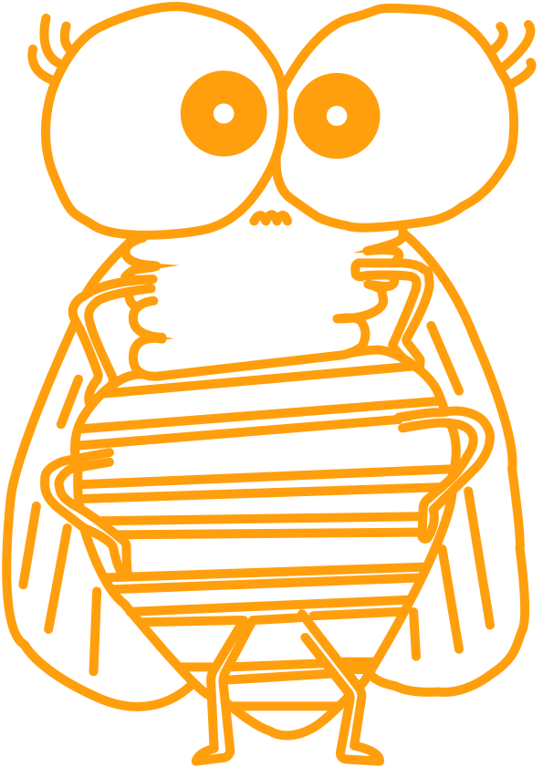
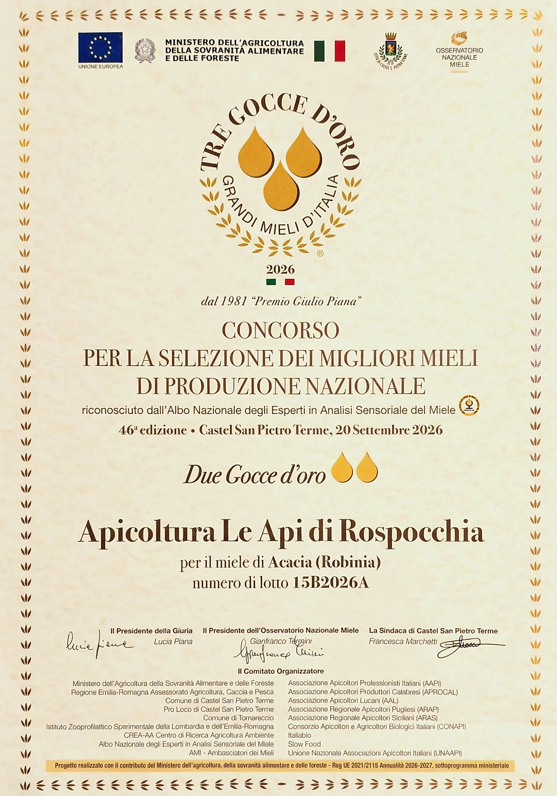
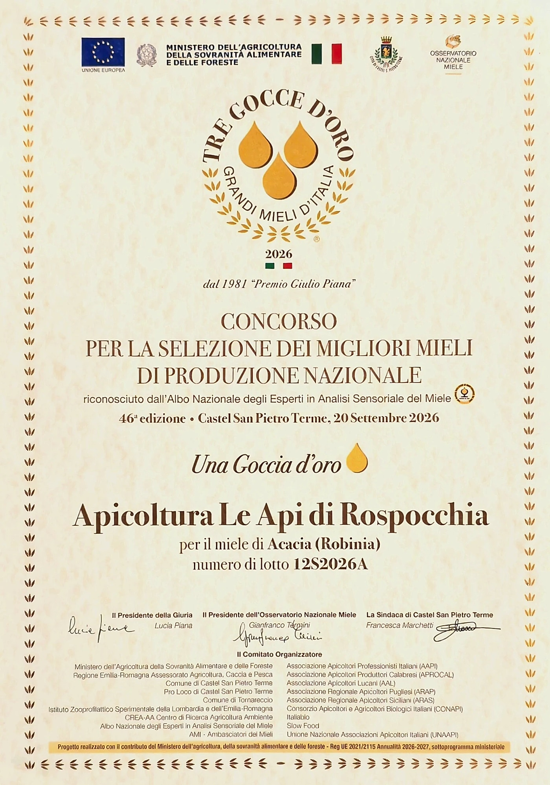
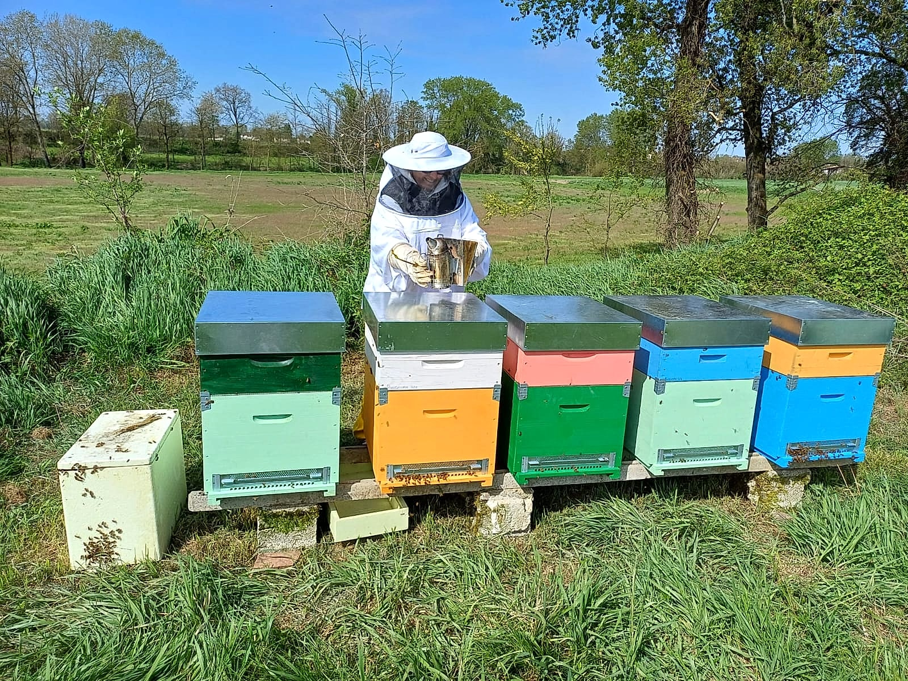
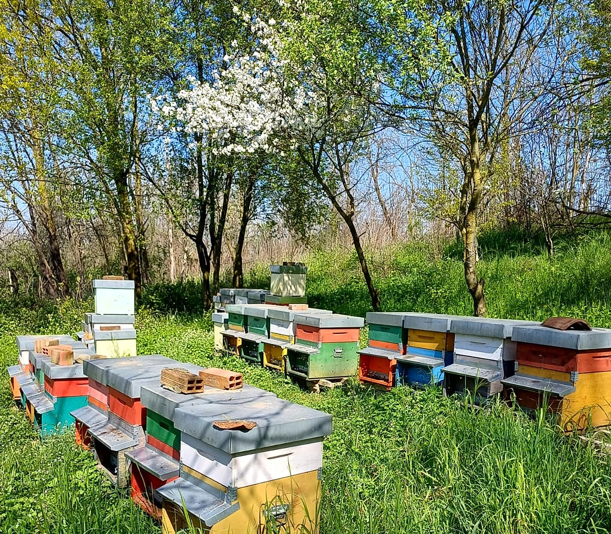
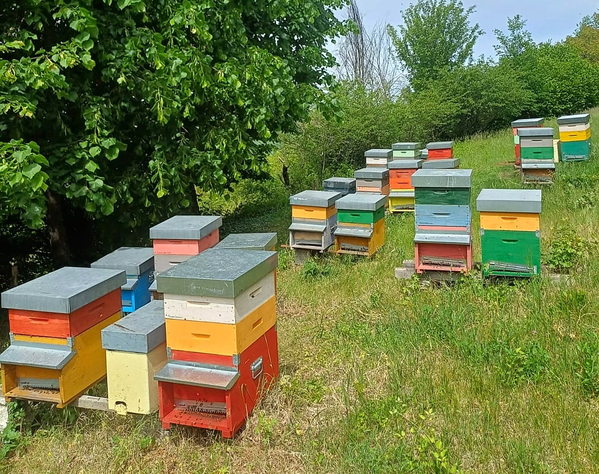
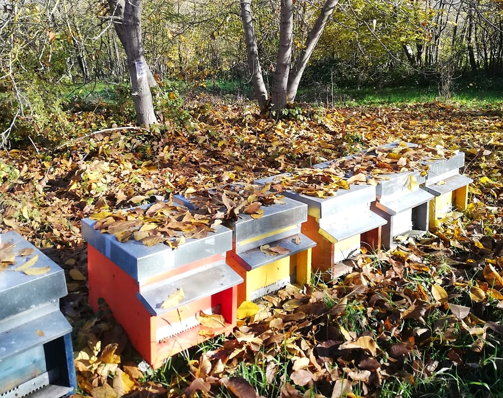
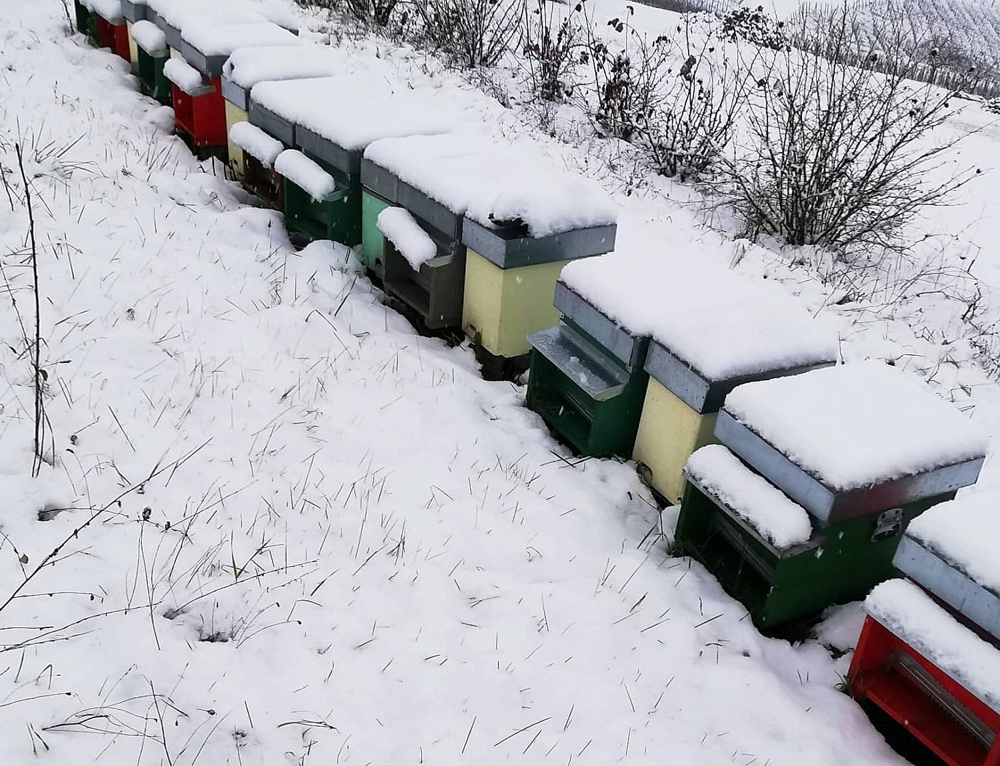

Le Api Di RospocchiaScopri il gusto autentico del miele prodotto con passione nelle colline di Montecalvo Versiggia
Esplora la nostra varietà di mieli artigianali: il pluripremiato miele di acacia, castagno, millefiori e molti altri. Ogni vasetto racconta una storia di fiori e dedizione.
Vai al CatalogoScopri il meraviglioso mondo delle api, le proprietà della pappa reale e tutti i segreti della produzione del miele. Conoscenza che viene dalla natura.
Scopri di PiùVieni a trovarci ai mercati di Pavia, Broni e Stradella. Ti aspettiamo per farti assaggiare i nostri prodotti e raccontarti la nostra storia.
ContattaciScopri i nostri laboratori didattici nelle scuole e in apiario. Un'avventura indimenticabile per avvicinare i più piccoli alla natura.
Scopri di PiùSiamo orgogliosi di annunciare che alla 46ª edizione del prestigioso concorso nazionale "Tre Gocce d'Oro – Premio Giulio Piana" il nostro Miele di Acacia ha conquistato ben due riconoscimenti: Due Gocce d'Oro e Una Goccia d'Oro.

46ª Edizione • Castel San Pietro Terme, 20 Settembre 2026
Lotto premiato: 15B2026A
46ª Edizione • Castel San Pietro Terme, 20 Settembre 2026
Lotto premiato: 12S2026ASulle colline incontaminate dell'Oltrepò Pavese, a Montecalvo Versiggia, curiamo con dedizione le nostre famiglie di api seguendo i ritmi lenti della natura. Ogni vasetto è il risultato di un lavoro paziente, del rispetto per l'alveare e dell'amore per il territorio.
I nostri prodotti sono 100% naturali e artigianali, lavorati a freddo senza additivi né conservanti: solo miele puro, come natura vuole.

Dalle prime fioriture primaverili fino al silenzioso riposo sotto la neve: ecco i veri scatti delle nostre arnie immerse nelle colline dell'Oltrepò Pavese.

Il risveglio della natura: i prati fioriscono e le api iniziano la raccolta di tarassaco, ciliegio e della nostra pluripremiata acacia.

Il pieno raccolto: le arnie si alzano con i melari colmi di millefiori, erba medica, castagno e ailanto.

Tra le foglie dorate del bosco le famiglie accumulano le ultime scorte di melata e propoli prima del freddo.

Sotto il manto di neve le api si stringono in glomere attorno alla regina, aspettando la nuova primavera.
Vuoi sapere quando sboccia l'acacia o quando è pronta la nuova melata? Entra nella nostra community WhatsApp per ricevere aggiornamenti in anteprima e curiosità dal mondo delle api.
Entra nella CommunityPer qualsiasi dolce curiosità